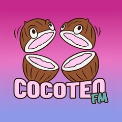
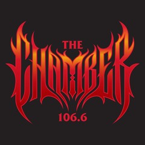
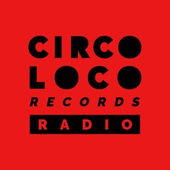
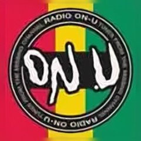
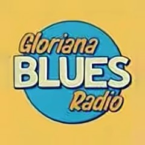

Tech.Explain Build Guide
GTA VI Radio Dial
Twist a real dial to flip through all 20 music stations from GTA VI, playing live from YouTube on whatever speakers your computer is connected to. Static between stations included.












1Get the dial
It's a 1.28" round-screen smart dial with an ESP32-S3 chip inside. It comes fully assembled: no soldering, no wiring.
Buy the dialGet this exact one. Lookalike knobs from other brands are wired differently and won't run the software. You'll also need a USB-C cable that carries data (not a charge-only one) and a computer with Chrome or Edge.
2Install the software
- Plug the dial into your computer with the USB-C cable.
- Click Install, pick the dial in the list that pops up, and confirm.
- Wait about a minute until it says it's done, then unplug the dial.
Open this page in Chrome or Edge on a computer to install. Phones and Safari can't do it.
This page has to be opened over https to install.
Nothing shows up in the list? Try a different USB-C cable (many only charge), or a different USB port on your computer.
3Connect it to your Wi-Fi
- Power the dial from anything USB: a phone charger, a power bank, your computer.
- The screen says join Wi-Fi GTA-Radio-Setup. Join that network on your phone.
- A setup page pops up (if it doesn't, open
192.168.4.1). Tap Configure WiFi, pick your home Wi-Fi, enter the password, and save.
Your Wi-Fi has to be 2.4 GHz (if your router shows two names, use the one without "5G"). Guest networks and networks with a sign-in page usually won't work.
4Turn on the radio
- On a computer on the same Wi-Fi, open
http://gta-radio.localin Chrome. Type the name, not the dial's IP address: YouTube won't play from an IP address. - Click Turn on the radio and leave the tab open.
- Twist to change stations. Press to mute. Hold for 2 seconds to show the address again.
The dial can live anywhere in the house. The sound comes out of the computer, so plug that into your speakers or sound system.
Troubleshooting
The page won't load, or loads halfway
Unplug the dial for a few seconds, plug it back in, wait for the logo, then reload the page. Make sure the computer is on the same Wi-Fi as the dial.
gta-radio.local doesn't open at all
Some networks block device names. Use Chrome, and check that the computer isn't on a VPN. On Windows, make sure the network is set to Private.
Moving it to a different Wi-Fi
Unplug it, hold the knob down while you plug it back in, and keep holding until it shows the setup screen. Then repeat step 3.
A station skips songs
Some YouTube videos don't allow playing outside YouTube, so the radio skips them. We update the song lists online, so your dial picks up fixes automatically.